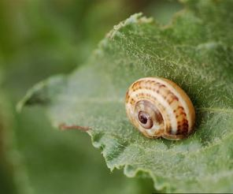

<!DOCTYPE html>
<html>
 <head>
  <title>free dumb facts/title>
 </head>
 <body>
  <h1>topic: snail sleep</h1>
  
  <p>yes, you heard it right, snails do sleep and guess what?<br>
   they can sleep for 3 years!! yes! 3 years, now your probably<br>
   wondering "don't snails only <strong>live</strong> for like 2<br>
   weeks?" well your wrong <strong(bruh)</strong> they can live for<br>
   about 10-15 years which is a lot! now as i said, they do sleep for<br>
   3 years inside there shell, for <strong>maxmimum protection!</strong><br>
   except us humans can step on it and say "oopsie, didn't realise that"<br>
   but thats fine after all who cares about snails? (just kidding, please dont<br>
   sue me) but yes, they can have a higher chance of survival if they hide in<br>
   their shell, because 1. either danger or 2. because heat. (i don't know im pretty<br>
   bad at facts) So yes these are some facts about snails, and they are pretty cool...<br>
  oh yeah and next time you step on a sleeping snail, at least its fallen asleep</p>
   
   
 
 </body> 
</html>
